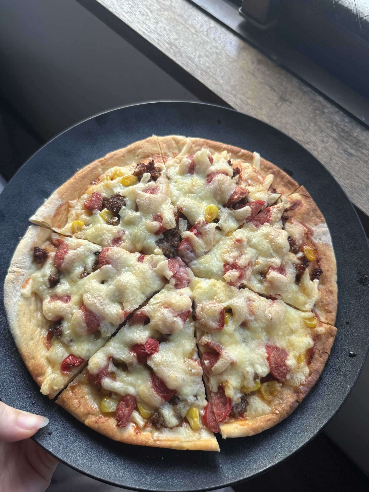

彼女が作ったピザ

心温まる手作りピザの夜
今日は、彼女が初めてpizzaを作ってくれました。トッピングを工夫して焼き上げたピザは、まるでお店で出てくるような本格的な仕上がりでした。
一口食べた瞬間に広がるチーズの風味と、カリッとした生地の食感。何よりも、相手のことを想って作ってくれたという気持ちが、一番のスパイスになっていた気がします。
"美味しい料理は、心を豊かにする。"
美味しいものを共有できる時間は、日々の生活の中で本当にかけがえのないものだと改めて感じました。今度は二人で一緒にトッピングを考えて、また新しいピザ作りに挑戦してみたいと思います。